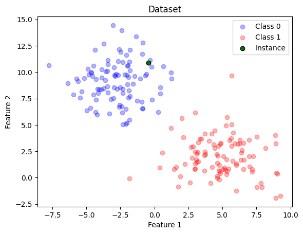
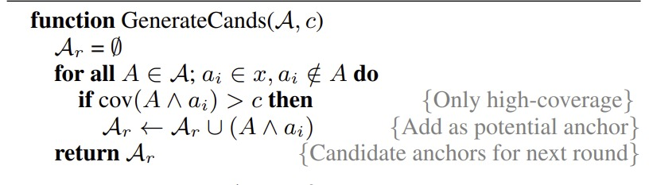

Inspired by The Annotated Transformer blog post, which is an amazing educational resource, I decided to start this series of posts where I will try to drill down some papers that I’ve been reading :) The focus is to provide some dummy explanation, giving preference to use code and some cool vizualizations alongside with it!
As a starting point, the authors from the paper claim that having a high level of human precision is super important when it comes to truly understanding a model’s prediction.
Important
It is important to endorse that human precision means that fraction of time where a human confidently predict the outcome of a model (thats not the same as precision from machine learning jargon)
Building on that concept, anchors come into play. They offer high-precision rules that simplify the behavior of complex models, ensuring predictions with a high confidence level. Think of them as your trusty local guides (well, anchors), helping you navigate the complex lanes of your model’s prediction landscape.
Local explanation methods like LIME (Ribeiro, Singh, and Guestrin 2016) are great, but they have their limitations. They represent the model’s local behavior linearly, which may not always capture the full picture (especially when extrapolating for instances). Here’s where anchors shine.
In essence, an anchor explanation is a set of ‘if-then’ rules (so called anchors). These rules assure us that the explanation holds good locally, and the algorithm tries to extend its relevance to as large an area as possible. So, as long as the anchors are in place, the prediction (almost) remains consistent, irrespective of what’s happening with other features not included in the anchor. In a nutshell, anchors keep the prediction ship steady, even when other features might be creating waves.
Important
By the way, my attempt here will be to explain Anchors in the context of tabular data and, at most, with text data. Please keep in mind that it is a model-agnostic model, so it works for any type of input!
Necessary Jargon
I’ll take the definitions from Alibi’s documentation, which are concise and really well defined :)
Predicate
Represents an expression involving a single feature. Some examples of predicates for a tabular dataset having features such as Age, Relationship, and Occupation are: - 28 < Age < 50 - Relationship = Husband - Occupation = Blue-Collar
Rule
A rule represents a set of predicates connected by the AND operator. Considering all the predicate examples above, we can construct the following rule:
28 < Age < 50 AND Relationship = Husband AND Occupation = Blue-Collar
Note that a rule selects/refers to a particular subpopulation from the given dataset.
Anchor
An anchor explanation is a rule that sufficiently anchors the prediction locally – such that changes to the rest of the feature values of the instance do not matter (Ribeiro, Singh, and Guestrin 2018)
Precision
Precision represents the probability of receiving the same classification label of the explained input if we query the model on other instances that satisfy the anchor predicates. The expected precision range is the interval \([t,1]\), where \(t\) is the user-specified precision threshold.
For example, if \(t=0.95\) and we have two instances, \(a\) and \(b\), that contains the same anchor predicates, the probability that a given model will predict the same result for both is \(0.95\).
Coverage
Coverage represents the proportion of the population which satisfy the anchor predicates. It is a positive number \(\leq 1\), where a value of corresponds \(1\) to the empty anchor.
Going Formal
Let’s say we have a set of conditions or rules, which we’ll call \(A\). \(A\) works on an easily understandable representation and it goes like this - if all conditions of \(A\) are met for a specific instance (let’s call it \(x\)), then \(A(x)\) will return 1.
In our earlier example, \(x\) has these feature values: Age is between 28 and 50, Relationship status is 'Husband', and Occupation is 'Blue-Collar'. If these are the conditions \(A\) is checking for, in this case, \(A(x)\) is \(1\) because all the conditions are met.
Now, suppose we have a complex model (we’ll refer to it as a ‘black box model’), which we’ll denote as \(f\), that takes input \(X\) and generates output \(Y\). Now, if we have a specific instance \(x \in X\), our objective with local model-agnostic interpretability is to make it easy for a user to understand why \(f(x)\) - the prediction for the instance \(x\) - is what it is.
The fundamental assumption here is that even if the model is too intricate to explain in a brief manner globally, if we “zoom in” on individual predictions, the task of explaining becomes feasible. In order to achieve this, most model-agnostic techniques use a process called ‘perturbation’, modifying the instance \(x\) following a specific “perturbation distribution” which we’ll denote as \(\mathcal{D}\).
Assuming the definition of \(A\) from before, we denote as \(\mathcal{D}(\cdot|A)\) the case when conditional distribution contains the rule \(A\) being applied. \(A\) is called an anchor if it holds true for \(x\) (i.e., \(A(x)=1\)) and is a sufficient condition for \(f(x)\) with high probability (the \(\tau\) introduced before). If we sample an instance \(z\) from \(\mathcal{D}(z|A)\) and it’s predicted as Positive in the same way as \(x\) (meaning \(f(x) = f(z)\)), then \(A\) is an anchor.
In other words:
Given we apply the anchor \(A\) to \(x\), the expected probability that \(f(x) = f(z)\) under the distribution \(\mathcal{D}\) conditioned on \(A\) is equal or greater then some threshold \(\tau\).
As stated before, an anchor \(A\) is identified as a collection of feature predicates related to \(x\), with a precision \(prec(A)\) that is equal to or greater than \(\tau\). This precision can be defined as follows:
The authors define precision in a probabilistic manner:
An anchor meets the precision condition with a high level of certainty.
\(P(prec(A) \geq \tau) \geq 1 - \delta\)
If there are multiple anchors that satisfy these criteria, preference is given to those that represent a larger portion of the input space, or in other words, those with the greatest coverage.
The coverage of an anchor \(A\), \(\text{cov}(A)\), is formally defined as the probability that it is applicable to samples derived from the distribution \(D\). We can represent it as follows:
\(\text{cov}(A) = \mathbb{E}_{D(z)}[A(z)]\).
Searching the set of Anchors
Thus, our goal is to identify the set of anchors, \(A\), that ensures maximum coverage. This can be achieved through the following combinatorial optimization problem:
To accomplish this, we don’t utilize a pre-existing dataset. Rather, we employ perturbation distributions along with a black box model, which are instrumental in estimating precision and coverage bounds under the distribution \(\mathcal{D}\).
For a good (and trackable) exploration of the model’s behavior within the perturbation space, we map the problem to a multi-armed bandit formulation.
Anchor Algorithm
The Dataset
For learning purposes, let’s use a simple dataset generator from scikit-learn which I trained a LGBMClassifier
Code
import numpy as npimport matplotlib.pyplot as pltfrom sklearn.datasets import make_blobsfrom lightgbm import LGBMClassifierfrom sklearn.model_selection import train_test_split# Generate a 2D dataset with two classesnp.random.seed(42)X, y = make_blobs(n_samples=200, centers=2, random_state=42, cluster_std=2.0)X_train, X_test, y_train, y_test = train_test_split(X, y, test_size=0.3, random_state=42)# Train the LightGBM classifierclf = LGBMClassifier(random_state=42)clf.fit(X_train, y_train)
LGBMClassifier(random_state=42)
In a Jupyter environment, please rerun this cell to show the HTML representation or trust the notebook. On GitHub, the HTML representation is unable to render, please try loading this page with nbviewer.org.
LGBMClassifier(random_state=42)
Also, I want to explain a single instance from test set. Let’s take the first element :)
instance_to_explain = np.where(X==X_test[0])[0][0]assert (X[instance_to_explain]==X_test[0]).all()def plot_dataset_with_instance(X, y, highlight_row=None, title="Dataset"):# Assuming you have two classes 0 and 1 class_0 = X[y ==0] class_1 = X[y ==1]# Create a scatter plot for each class plt.scatter(class_0[:, 0], class_0[:, 1], c='blue', label='Class 0', alpha=0.3) plt.scatter(class_1[:, 0], class_1[:, 1], c='red', label='Class 1', alpha=0.3)if highlight_row isnotNone: plt.scatter(X[highlight_row, 0], X[highlight_row, 1], c='green', label='Instance', alpha=1, marker='o', edgecolors='k') plt.xlabel('Feature 1') plt.ylabel('Feature 2') plt.title(title)# Add a legend to the plot plt.legend() plt.show()# Pass in the index of the row you want to highlightplot_dataset_with_instance(X, y, highlight_row=instance_to_explain)

Therefore, I want to provide an explaination through Anchors for the green point, which comes from the test set.
In the paper, the authors separates the candidate generation from the Anchor algorithm itself. I think it is better to threat them altogether, then in other hands we can say that the whole algorithm is three fold: 1. Candidate Generation 2. Best candidate identification
Identifying Candidates
We start by creating an ‘anchor’ \(A\), which we initially set up as an empty rule that can apply to every instance. As we iterate through our process, we come up with new potential rules that expand \(A\) by adding another feature predicate, denoted as \(\{a_i\}\), to its definition. In other words, with each iteration, our set of potential rules looks like \(\{A \wedge a_i, A \wedge a_{i+1}, A \wedge a_{i+2}, \dots\}\), each one just adding a new feature predicate to the last.
Mathematically, the algorithm is defined as follows (taken from the paper): 
Show me the code!
Before that we have to define some intermediate functions that will help us to simplify things2
Creating Predicates
Since anchors are a set of predicates, we need to define what a Predicate is
Please note that the generate_predicates method that I implemented uses unique values from dataset train to set the rules. I decided to keep it this way to simplify things and focus on what matters. However, if we considerer real implementations, we should create rules based on Discretization of continuous features to reduce the search space. Also, authors claim to have used a validation dataset for \(\mathcal{D}\) instead of the training set.
Code
def calculate_coverage(anchor, D): D_sample = D.copy()for predicate in anchor: mask = predicate(D_sample) indices_match_anchor = np.argwhere(mask ==True).flatten() D_sample = D_sample[indices_match_anchor]# D_sample is equal to the number of instances where anchor rules holdreturnlen(D_sample)/len(D)def generate_cands(anchor_set, c, X_train): A_r = [] predicates = generate_predicates(X_train)iflen(anchor_set) ==0:# each predicate is a potential anchor in the first roundfor predicate in predicates: anchor = [predicate] cov = calculate_coverage(anchor, X_train)if cov > c: A_r.append(anchor)else:for anchor in anchor_set: anchor_features = {pred.feature for pred in anchor}for predicate in predicates:# Skip predicates already in the anchorif predicate.feature in anchor_features:continue# Create a new candidate anchor by adding the predicate A_new = anchor.copy() A_new.append(predicate) cov = calculate_coverage(anchor, X_train)if cov > c:# If coverage is above threshold, add to results A_r.append(A_new)print(f"Found {len(A_r)} new anchors with coverage above {c}")return A_r
Lets see a quick and simple example where we want to explain the first element of test set and the desired coverage is 0.95
Important
Also, realize that the way that we defined \(\mathcal{D}\) is specific for Tabular cases. For Images or Text these might difer. If you want to learn more, check this out
# Apply the functionA = [] # start with an empty anchorc =0.95# coverage threshold, set as desiredx = X_test[0]A_r = generate_cands(A, c, X_train)len(A_r)
In order to determine the most suitable candidate from a given pool, the authors approach the problem by formulating it as an exploration of multi-armed bandits (Kaufmann and Kalyanakrishnan 2013). Here, each candidate \(A\) is considered as an arm, and the hidden reward is represented by the true precision of \(A\) on \(\mathcal{D}(\cdot|A)\). Evaluating the expression \(\mathbb{1}_{f(x)=f(z)}\) on a sample drawn from \(\mathcal{D}(z|A)\) corresponds to pulling the arm \(A\).
The authors utilized a method called KL-LUCB (short for Kullback-Leibler Lower Confidence Bound), to determine the rule with the highest precision. However, explaining the intricacies of KL-LUCB in a brief blog post may be overly complex. Since our main focus is on Anchor’s theory rather than Reinforcement Learning, I will simplify this part by employing an \(\epsilon\)-greedy approach.
Differences into algorithm approaches
I asked ChatGPT to define this one and considering it is correct, I thought it would worth to put it here:
The Kullback-Leibler Lower Confidence Bound (KL-LUCB) and the \(\epsilon\text{-greedy}\) algorithms are two different approaches to the multi-armed bandit problem, which is a classical problem in probability theory and statistics that models the trade-off between exploration and exploitation in sequential decision-making.
An \(\epsilon\text{-greedy}\) algorithm is a simple approach where, with probability epsilon, the algorithm chooses an arm at random (exploration). With probability \(1-\epsilon\), it selects the arm with the highest estimated reward (exploitation). The value of epsilon is usually set to a small value, and it can be decreased over time to favor exploitation over exploration.
On the other hand, the KL-LUCB calculates the confidence bounds (an upper one and a lower one on the expected rewards for each option using the Kullback-Leibler divergence, which quantifies the difference between two probability distributions. This allows KL-LUCB to make more informed decisions based on the uncertainty of the rewards.
Therefore, for implementing the exploration vs. exploitation algorithm, we will not need to calculate the upper confidence and lower confidence bounds for precision, but rather we will always take the maximum precision or a random one, depending on \(\epsilon\) value.
Important
I’ll not paste the pseudo code for the other algorithms (BestCands and BeamSearch) shown in paper since I implemented variations of them by using \(\epsilon \text{- greedy}\) instead of KL-LUCB
# Function to get a sample which satisfies the rules in an anchordef sample_conditionally(X, anchor): D_sample = X.copy()for predicate in anchor: mask = predicate(D_sample)# Use the mask to sample from the training set D_sample = D_sample[mask]#we are interested in obtaining samples from minimum size of 2iflen(D_sample)<=1: returnNone#D_sample will contain the instances where A(x)=1, where A is the anchor# I decided to sample half of it, but we could use other values rnd_indices = np.random.choice(len(D_sample), size=len(D_sample)//2) D_sample = D_sample[rnd_indices]return D_sample# Function to estimate the precision of an anchordef estimate_precision(clf, X_train, x, anchor): fx = clf.predict([x]) z = sample_conditionally(X_train, anchor)if z isNone: # No sample satisfies the anchorreturn0.0 fz = clf.predict(z)return (fz==fx).mean()# Main function to find the best candidate to add to the anchordef best_cand(anchor_candidates, X_train, x, clf, epsilon, num_samples=1000):iflen(anchor_candidates) ==0:returnNone num_arms =len(anchor_candidates) Q = np.zeros(num_arms) N = np.zeros(num_arms, dtype=int)for _ in tqdm(range(num_samples), desc="Performing Epsilon Greedy approach"):if np.random.rand() < epsilon: # Explore arm = np.random.randint(num_arms)else: # Exploit arm = np.argmax(Q) anchor = anchor_candidates[arm] reward = estimate_precision(clf, X_train, x, anchor) N[arm] +=1 Q[arm] += (reward - Q[arm]) / N[arm]return anchor_candidates[np.argmax(Q)]
print("Anchors final rule: "+"AND ".join(str(predicate) for predicate in best_anchor))
Anchors final rule: x[0] <= 7.2508364505367595
Going greedy
To get the complete version of the algorithm, we then implement a Greedy Search approach, based on the following parameters: - blackbox_model the blackbox model that we want to explain - instance_to_explain the instance that we want to analyze - D the perturbation sample dataset. X_train in our scenario - epsilon, the \(\epsilon\) related to \(\epsilon \text{- greedy}\) approach - tau the desired precision that we want to achieve
Therefore, greedly we will always take the best candidate anchor according to previous best_cand implementation if its precision is above our desired threshond \(\tau\) and then we incrementaly increases the predicates to the rule set of this given anchor until we explore the entire space
Found 560 new anchors with coverage above -1
Found 150640 new anchors with coverage above 0.03571428571428571
Found 0 new anchors with coverage above 0.10714285714285714
As we can see, there is some issues by using a Greedy approach, which we will get into details in the next section
Issues with Greedy Search
As we can see, due to the greedy nature of the algorithm, it is impossible to search two different anchors “at the same time”. At every time, it will select the best candidate and incrementally augment it (so we can’t backtrack, for example). Also, the greedy search does not consider coverage, so it is biased to return the shortest anchor that respects the precision \(\tau\) threshold.
We can extend the greedy approach to address these issues so that instead of taking the best candidate, we take the best \(B\) ones. Therefore, we turn a greedy search problem into beam-search. Given this set of \(B\) candidates, we search for the one with the highest coverage.
Beam Search
Code
def best_candidate_beam(anchor_candidates, X_train, x, clf, epsilon, num_samples=1000, B=10):iflen(anchor_candidates) ==0:returnNoneif B >len(anchor_candidates):return anchor_candidates num_arms =len(anchor_candidates) Q = np.zeros(num_arms) N = np.zeros(num_arms, dtype=int)for _ in tqdm(range(num_samples), desc="Performing Epsilon Greedy approach"):if np.random.rand() < epsilon: # Explore arm = np.random.randint(num_arms)else: # Exploit arm = np.argmax(Q) anchor = anchor_candidates[arm] reward = estimate_precision(clf, X_train, x, anchor) N[arm] +=1 Q[arm] += (reward - Q[arm]) / N[arm] top_B_indices = np.argpartition(Q, -B)[-B:] # Take the best B candidates instead of the top one top_B_anchors = [anchor_candidates[i] for i in top_B_indices]return top_B_anchors
Found 560 new anchors with coverage above -1
Found 85680 new anchors with coverage above 0.45
Found 0 new anchors with coverage above 0.45714285714285713
print("Anchors final rule: "+"AND ".join(str(predicate) for predicate in final_anchor))
Anchors final rule: x[1] > 5.038647509945887AND x[0] <= 3.0942284071529578
calculate_coverage(final_anchor, X_train)
0.45714285714285713
estimate_precision(clf, X_train, x, final_anchor)
1.0
This concludes the step-by-step simplified explanation of the Anchor algorithm. However, in a real world scenarios, we don’t expect to implement such an algorithm from scratch (also, this is reeeeeeeeally low performative due to maintaining that as didactic as possible). For that, we can rely on really awesome libraries, such as alibi
Show me the real example
I could use a sample dataset for that, but this would increase the lenght of this post, but I will use a simple boilerplate code for alibi code such that it could be easily extensible for other datasets :)
from alibi.explainers import AnchorTabularexplainer = AnchorTabular(clf.predict, feature_names=clf.feature_name_)explainer.fit(X_train)
Some considerations: - batch_size is the size of sample size used, which was half of the dataset in our examples - coverage_sample is the number of times we repeat the sampling process for calculating coverage. We sampled just one for the entire dataset in our case
explanation = explainer.explain(x, threshold=0.95, batch_size=100, beam_size=10)print("Anchors final rule: "+" AND ".join(str(predicate) for predicate in explanation.anchor))
Anchors final rule: Column_1 > 4.35 AND Column_0 <= 1.94
I hope that this blog post provided more insights about Anchors algorithms and its applications. For more explanations, please refer to main paper (Ribeiro, Singh, and Guestrin 2018) (especially if you want to learn about the KL-LUCB setting and its relationship with other definitions, such as the probabilistic meaning of precision and the \(\delta\) hyperparameter), the alibi documentation provides really valuable resources and Anchor’s Chapter from Interpretable ML book
References
Kaufmann, Emilie, and Shivaram Kalyanakrishnan. 2013. “Information Complexity in Bandit Subset Selection.” In Proceedings of the 26th Annual Conference on Learning Theory, edited by Shai Shalev-Shwartz and Ingo Steinwart, 30:228–51. Proceedings of Machine Learning Research. Princeton, NJ, USA: PMLR. https://proceedings.mlr.press/v30/Kaufmann13.html.
Ribeiro, Marco Tulio, Sameer Singh, and Carlos Guestrin. 2016. “"Why Should I Trust You?": Explaining the Predictions of Any Classifier.”CoRR abs/1602.04938. http://arxiv.org/abs/1602.04938.
———. 2018. “Anchors: High-Precision Model-Agnostic Explanations.” In AAAI Conference on Artificial Intelligence (AAAI).
Footnotes
Depending on the effort that I will need to put on that I will decide if I would continue or not↩︎
ChatGPT helped me to create this whole. It is be being a true ally for writing my posts as well :)↩︎